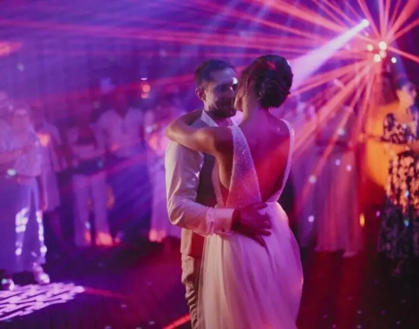
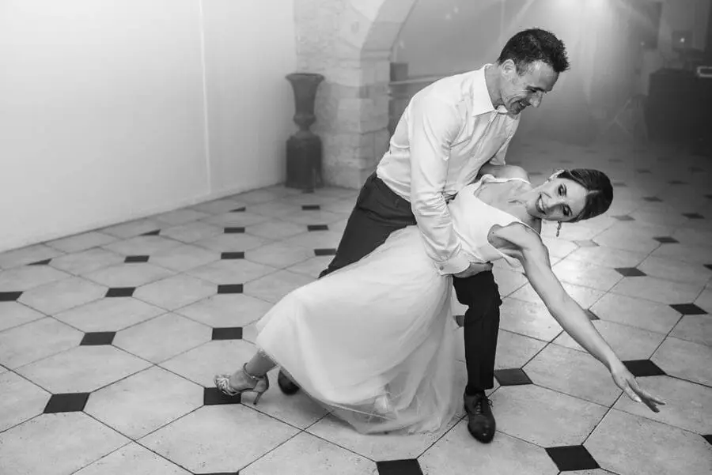
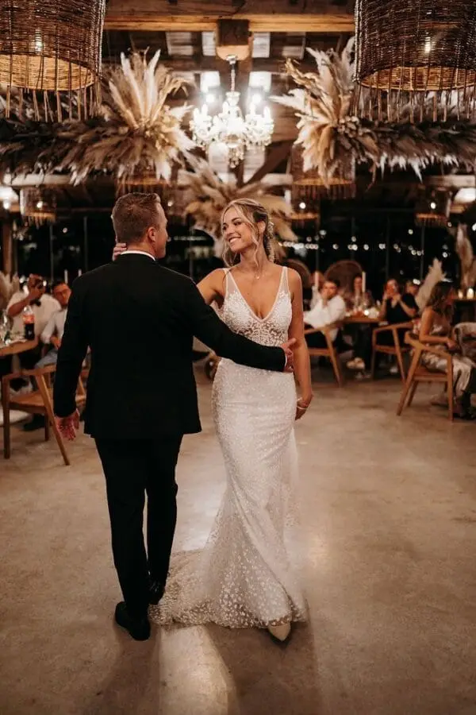
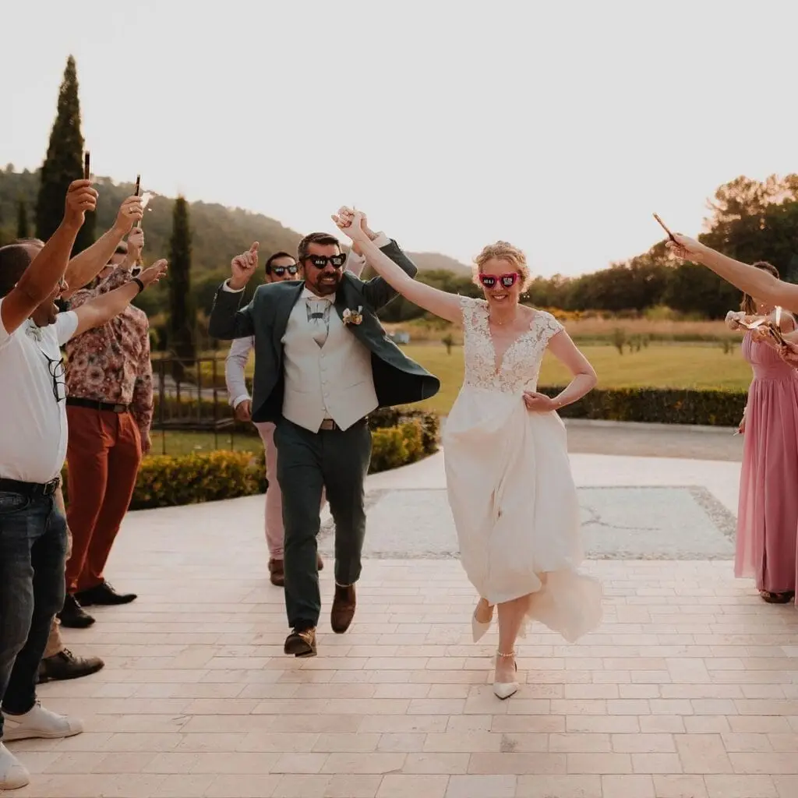
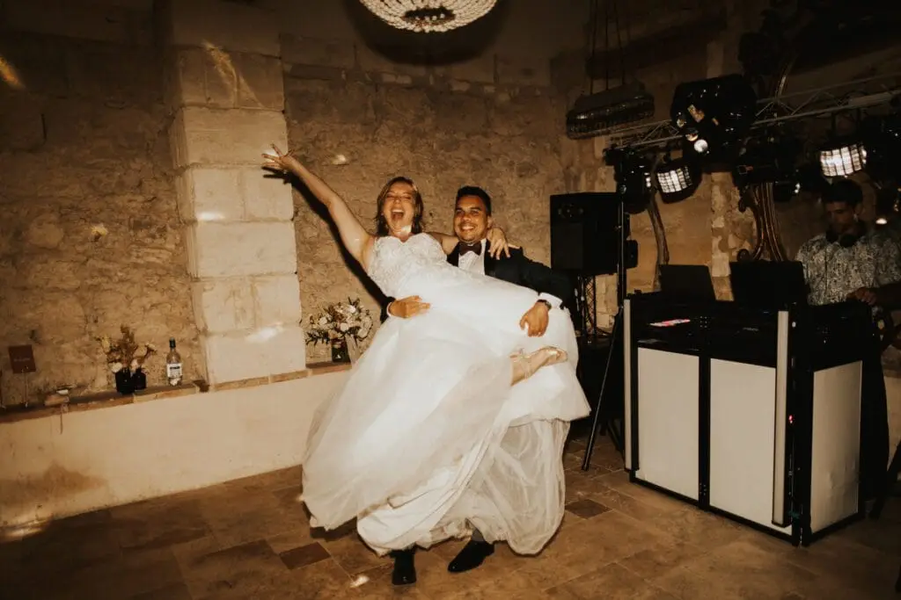

Discover how to create a first dance that reflects you: personalised choreography, choice of music, tips and advice for a unique, memorable first dance.

The first dance is much more than a simple dance at your wedding. It is the first moment you appear as a married couple, a moment all your guests look forward to and one that will stay etched in your memories forever. It is the perfect opportunity to convey your emotions, show your closeness and create a unique memory.
But this moment can sometimes cause stress. Many couples feel uncomfortable on the dance floor, worry about looking awkward or don't know how to create a wedding first dance that truly reflects their personality. That is where the magic happens when you choose a personalised first dance, a choreography that reflects you, tells your story and shows you at your best.
In this article, we explore every step of creating a first dance that reflects you: from choosing the music to creating the choreography, through rehearsals, tips for managing stress and original ideas to surprise your guests.
Why personalise your first dance?

Every couple is unique, and your first dance should be too. The first dance isn't just a formality: it reflects your story and your closeness. Some brides dream of a classic waltz, others of a lively routine to a modern hit. Personalisation lets you:
Tell your story: your choice of music, your dance steps and the looks you exchange can illustrate your journey and your bond.
Create a "wow" effect: your guests will long remember an original, authentic first dance.
Feel at ease: adapting the dance to your level and style lets you fully enjoy this unique moment.
For example, one couple I worked with chose to start their dance with a gentle ballad before switching to a more upbeat rhythm, adding a few humorous moves. The result: a moving, funny moment that was completely them.
Choosing the perfect music
It all starts with the music. The choice of song is crucial, because it will set the rhythm and atmosphere of your first dance.
Types of music:
Romantic and gentle: ideal for an intimate, moving moment. Slow songs let you express your emotions through every gesture.
Upbeat and catchy: surprises your guests and makes the dance more festive. Perfect if you want an original first dance.
Mix or mash-up: combines several songs to tell a story. For example, starting with a gentle song and then switching to an upbeat track for a surprise finale.
A little tip: the average first dance lasts 3 to 4 minutes. If you choose several songs, make sure the transitions are smooth and the dance stays coherent.
If you are short of inspiration for your first dance, here are nine songs that always work: Perfect by Ed Sheeran, All of Me by John Legend, Thinking Out Loud, A Thousand Years, La Vie en Rose, Can't Help Falling in Love, You Are the Reason, Uptown Funk and Happy by Pharrell Williams. You can use them as they are or create a medley for a personalised first dance that reflects you.




9 songs for your first dance
"Perfect" – Ed Sheeran
A modern romantic ballad, ideal for an intimate, emotional dance."All of Me" – John Legend
An essential classic, perfect for a gentle routine full of closeness."Thinking Out Loud" – Ed Sheeran
Romantic and melodic, this song allows fluid, elegant movement on the floor."A Thousand Years" – Christina Perri
Ideal for a poetic wedding full of emotion."La Vie en Rose" – Édith Piaf (or a modern cover)
A timeless classic that brings charm and romance to your first dance."Can't Help Falling in Love" – Elvis Presley (or a modern version)
Gentle and universal, this song suits any personalised choreography."You Are the Reason" – Calum Scott
An emotional melody and a perfect crescendo for a meaningful dance."Uptown Funk" – Mark Ronson ft. Bruno Mars
For couples who want to start gently and then surprise their guests with a catchy beat."Happy" – Pharrell Williams
Ideal for an upbeat, joyful and quirky first dance that puts everyone in a good mood.
You can even choose a song with a special meaning for your relationship, such as the one playing when you first met or on your first trip together.
Creating a choreography that reflects you
Once you have chosen the music, it is time to think about the choreography. There's no need to be a professional dancer: what matters is feeling comfortable and natural.
Steps to create your dance:
Start simple: a few basic steps are enough to set the rhythm. A first dance doesn't need to be complicated to be effective.
Add your personal touch: an improvised spin, a knowing look, a gesture that is truly you. This is what will make your dance unique.
Rehearse regularly: practise several times before the wedding, even 10–15 minutes a day, to gain fluidity.
Plan the transitions: if you use several songs or musical styles, work out how to move from one rhythm to another without a break.
💡 Tip: you can call on a wedding dance coach. They will guide you in creating a professional yet natural choreography suited to your level and style.
Ideas to surprise your guests
A first dance that reflects you can include little surprises that will make your guests smile or move them:
Start with a solo each, in turn, then come together for the finale.
Add a humorous or unexpected moment.
Use props such as a bouquet, ribbons or hats for visual effect.
Surprise everyone with a change of musical style or an unexpected dance sequence.
The key is to stay authentic. If you attempt a sequence that is too complicated or doesn't suit you, the result can look forced. The best moments are those where you are simply yourselves.
Preparing the dance and managing stress
The big day can be stressful, but with good preparation you can fully enjoy this moment:
Rehearse in advance: practise for several weeks before the wedding so you are comfortable with the steps.
Test the dance floor: make sure the space and the floor let you dance comfortably.
Plan suitable shoes: comfortable and suited to your choreography.
Practise in your outfits: do a few rehearsals in your wedding shoes and clothes to avoid unpleasant surprises.
Breathe and have fun: even if you make a mistake, your guests will feel your authenticity and closeness.
💡 Tip: some couples choose to do their final rehearsal with a videographer to see what works on screen and adjust the choreography before the wedding.


Anecdotes and inspiration
One couple started their first dance with a romantic ballad, then switched to a Latin rhythm. Their guests were surprised and moved at the same time.
Another couple included symbolic gestures: a nod to their first meeting, a step they had been doing in their living room for years. The result: a deeply personal dance that told their story.
At some bohemian weddings, couples choose to end the dance with an improvised spin and a very upbeat finale to launch the party, surprising everyone and setting off applause.
These examples show that a first dance that reflects you can be moving, funny, original or spectacular, depending on what you want to convey.
Tips for a successful first dance
Be yourselves: there's no point copying a viral video if it doesn't reflect you.
Start early: plan your first dance several months before the wedding.
Make videos: filming your rehearsals helps you fix small details and gain confidence.
Choose the right music: it should move you and make you want to dance.
Don't be afraid to ask for help: a coach or an experienced friend can give valuable advice.
In short
Creating a first dance that reflects you is a way to make your wedding unique. Between the choice of music, a personalised choreography and little details that are truly you, every decision helps create an unforgettable, authentic moment.
Don't aim for perfection, but for sincerity. Use this moment to express your love, your closeness and your personality. Your guests will feel your authenticity and the magic will happen naturally.
Your first dance isn't just a dance; it is a moment that tells your story and will stay etched in your memories forever. Make it your own, and you will live one of the most memorable moments of your wedding.
Lovely Day Event offers several services
Wedding planning
I step in at every stage of your preparations and guide you through your choices, bringing ideas and suggestions so that your wedding looks like no one but you.
On-the-day coordination
I will be the conductor of your day, managing the suppliers, the set-up of your decor and the smooth running of this beautiful day.
Wedding design
Creative and passionate, I am a certified Wedding Designer and I create a scenographic atmosphere that matches the theme of your wedding. Styling is included in the Signature package, or offered as an add-on to on-the-day coordination.